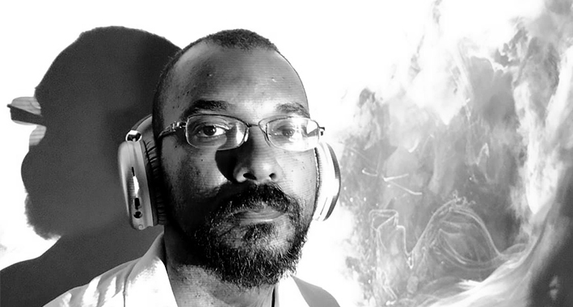

Jaison J Franklin
Designer editorial
Apresentação
Olá. Tenho 13 anos de experiência na criação de livros físicos, e-books, peças de divulgação e capas. Dividi todos esses anos trabalhando como CLT e freelancer. Trabalhei com editoras, escolas e escritores independentes. Toda essa trajetória me possibilitou desenvolver minhas habilidades profissionais (softwares, velocidade, qualidade) e pessoais (organização, visão do fluxo). Nos últimos anos explorei a possibilidade dos livros digitais e desenvolvi também diversos projetos para programas como o PNLD (Programa Nacional do Livro e do Material Didático). Depois de toda essa trajetória me vejo no patamar de um profissional que domina o mercado de criação editorial. Acredito ter conseguido essa condição graças ao meu gosto por livros e pela minha curiosidade em explorar novas formas de desenvolver um trabalho específico. Essa curiosidade vem da minha apreciação e vivência com produção cultural (quadrinhos, games, revistas, audiovisual, etc). Essa curiosidade me levou recentemente a criar meus próprios livros.
Formação
Graduado pela faculdade de Artes Visuais na Universidade Federal de Minas Gerais. Turma de 2008.
Me especializei em Cinema de Animação. Desse período eu carrego hoje minha habilidade com teoria de arte, ilustração, edição de música e edição de vídeos. Rítmo, organização, repetição e volume de trabalho.